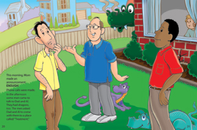

The Dragon Who Lives At Our House
Praise for The Dragon Who Lives at Our House
"Wow! This story nails it. What a fantastic tool for any counselor helping kids understand or deal with very adult problems."
-Beth Leaf, Executive Director, R3 (Collaborative for Recovery, Reentry, Renewal)
"Al the Dragon is an ingenious story with engaging illustrations that will have readers from all ages returning again and again. This masterpiece will benefit families, educators, support groups and professionals all over the world."
-Sheila Booth-Alberstadt, Children's Author
When Al first came home with Dad, he was harmless and fun, but it soon became apparent that what seemed like fun could quickly get out of control.
This poignant story, told through delightful illustration, is a wonderful help to anyone trying to understand or discuss the heartbreak and hope of a family dealing with substance abuse or any life controlling issue.
